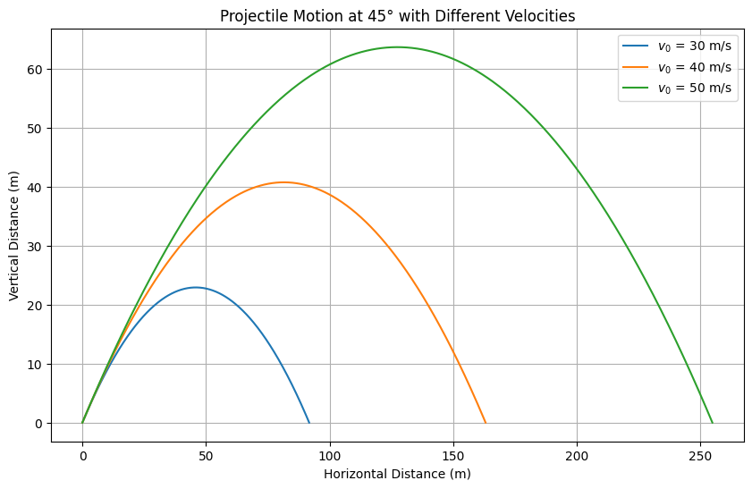
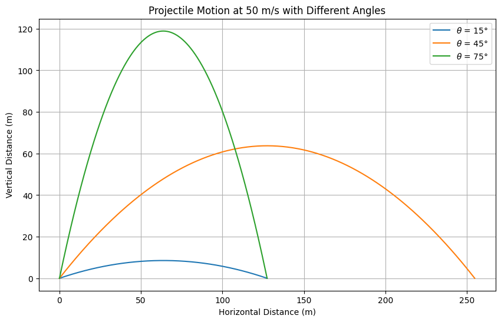

Problem 1
Investigating the Range as a Function of the Angle of Projection
Motivation
Projectile motion, though seemingly simple, presents a deep and rich structure when examined thoroughly. By studying how the range of a projectile depends on the launch angle, we reveal fundamental principles of kinematics and dynamics. Variables like initial velocity, gravitational acceleration, and launch height provide a broad variety of solutions, applicable to real-world situations such as sports, engineering, and space science.
Theoretical Foundation
Starting from the basic laws of motion, we can derive the projectile equations. Assume no air resistance and flat terrain.
Let:
\(v_0\) = Initial velocity
\(\theta\) = Angle of projection
\(g\) = Gravitational acceleration
The equations of motion are: $$ \frac{d^2x}{dt^2} = 0 \quad \Rightarrow \quad \frac{dx}{dt} = v_0 \cos(\theta) $$
Integrating these:
Time of Flight
Setting \(y = 0\) at landing:
Solving for T
Range
Horizontal distance covered:
Maximum Height
The maximum vertical position:
Observations
Maximum range occurs when \(\sin(2\theta) = 1\), that is, \(\theta = 45^\circ\)
Symmetry: \(R(\theta) = R(90^\circ - \theta)\)
Effects of parameters \(v_0\): Range increases quadratically with initial velocity.
\(g\): Range decreases inversely with gravitational acceleration.
Launch height: Would modify the symmetry and the optimal angle if included.
Practical Applications Sports: Finding the best launch angles for throws, shots, or kicks.
Engineering: Ballistics calculations.
Astrophysics: Launching satellites or projectiles from planetary surfaces.
Including air resistance, wind, or launching from non-level terrain are real-world complications addressed with numerical methods.
Implementation
Below are Python scripts simulating projectile motion under the given scenarios.
import numpy as np
import matplotlib.pyplot as plt
def projectile(v0, angle_deg, g=9.81):
angle_rad = np.radians(angle_deg)
t_flight = 2 * v0 * np.sin(angle_rad) / g
t = np.linspace(0, t_flight, num=500)
x = v0 * np.cos(angle_rad) * t
y = v0 * np.sin(angle_rad) * t - 0.5 * g * t**2
return x, y
velocities = [30, 40, 50]
angle = 45
plt.figure(figsize=(10,6))
for v0 in velocities:
x, y = projectile(v0, angle)
plt.plot(x, y, label=f'$v_0$ = {v0} m/s')
plt.title("Projectile Motion at 45° with Different Velocities")
plt.xlabel("Horizontal Distance (m)")
plt.ylabel("Vertical Distance (m)")
plt.grid(True)
plt.legend()
plt.show()
 Scenario 1: 45° angle, different velocities (30, 40, 50 m/s)
import numpy as np
import matplotlib.pyplot as plt
def projectile(v0, angle_deg, g=9.81):
angle_rad = np.radians(angle_deg)
t_flight = 2 * v0 * np.sin(angle_rad) / g
t = np.linspace(0, t_flight, num=500)
x = v0 * np.cos(angle_rad) * t
y = v0 * np.sin(angle_rad) * t - 0.5 * g * t**2
return x, y
velocities = [30, 40, 50]
angle = 45
plt.figure(figsize=(10,6))
for v0 in velocities:
x, y = projectile(v0, angle)
plt.plot(x, y, label=f'$v_0$ = {v0} m/s')
plt.title("Projectile Motion at 45° with Different Velocities")
plt.xlabel("Horizontal Distance (m)")
plt.ylabel("Vertical Distance (m)")
plt.grid(True)
plt.legend()
plt.show()
Scenario 2: 50 m/s, different angles (15°, 45°, 75°)
angles = [15, 45, 75]
v0 = 50
plt.figure(figsize=(10,6))
for angle in angles:
x, y = projectile(v0, angle)
plt.plot(x, y, label=f'$\\theta$ = {angle}°')
plt.title("Projectile Motion at 50 m/s with Different Angles")
plt.xlabel("Horizontal Distance (m)")
plt.ylabel("Vertical Distance (m)")
plt.grid(True)
plt.legend()
plt.show()
Graphical Representations
In the first plot, as initial velocity increases, range increases significantly.
angles = [15, 45, 75]
v0 = 50
plt.figure(figsize=(10,6))
for angle in angles:
x, y = projectile(v0, angle)
plt.plot(x, y, label=f'$\\theta$ = {angle}°')
plt.title("Projectile Motion at 50 m/s with Different Angles")
plt.xlabel("Horizontal Distance (m)")
plt.ylabel("Vertical Distance (m)")
plt.grid(True)
plt.legend()
plt.show()

In the second plot, \(45^\circ\) provides the maximum range, while \(15^\circ\) and \(75^\circ\) give the same (shorter) range.
Limitations and Extensions
Limitations No air resistance considered.
Flat launch and landing height assumed.
Extensions Include air resistance: drag force proportional to velocity.
Launch from or land on elevated platforms.
Add wind effects.
Summary
Analyzing projectile motion illustrates fundamental physics while also introducing opportunities for deeper exploration using computational methods. Studying range as a function of launch angle helps us understand both idealized and real-world trajectories.
Colab Link
Colab - Problem 1 Simulation